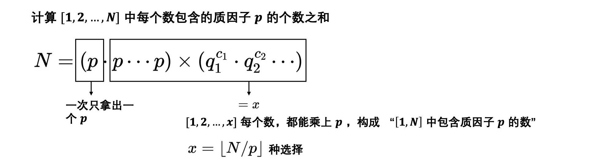

CodeJam 2021 qualified Reversort Engineering
首先很容易想到对[ 1 ⋯ n ] [1\cdots n] [ 1 ⋯ n ] C C C n − 1 ⩽ C ⩽ n ( n + 1 ) 2 − 1 n-1 \leqslant C \leqslant \frac{n(n+1)}{2} - 1 n − 1 ⩽ C ⩽ 2 n ( n + 1 ) − 1
可以反着来构造，最开始令序列有序a = { 1 , 2 , ⋯ n } a = \{1, 2, \cdots n\} a = { 1 , 2 , ⋯ n } d ( i ) d(i) d ( i ) i i i j j j len [ i ⋯ j ] \text{len}[i \cdots j] len [ i ⋯ j ] d ( i ) = len [ i ⋯ j ] d(i)=\text{len}[i \cdots j] d ( i ) = len [ i ⋯ j ] j j j i → n i \to n i → n C ← C − ( n − 1 ) d ( i ) = 1 C \leftarrow C-(n-1) \quad d(i) = 1 C ← C − ( n − 1 ) d ( i ) = 1
如果C > 0 C > 0 C > 0 len [ i ⋯ j ] > 1 \text{len}[i \cdots j] > 1 len [ i ⋯ j ] > 1 于是可以贪心构造，如果在排序的某个阶段，∀ i ∈ [ n − 2 → 0 ] \forall i \in [n-2 \to 0] ∀ i ∈ [ n − 2 → 0 ] [ i ⋯ j ] [i \cdots j] [ i ⋯ j ] a j a_j a j a i a_i a i 2 2 2 [ i ⋯ j ] [i \cdots j] [ i ⋯ j ] a i a_i a i a j a_j a j 2 2 2 [ i ⋯ j ] [i \cdots j] [ i ⋯ j ] [ i ⋯ j ] [i \cdots j] [ i ⋯ j ] C ′ C' C ′
for ∀ i ∈ [ n − 2 → 0 ] \textbf{for} \ \forall i \in [n-2 \to 0] for ∀ i ∈ [ n − 2 → 0 ] i i i max d ( i ) = n − 1 − i \max d(i) = n-1-i max d ( i ) = n − 1 − i C > 0 C > 0 C > 0
for [ 1 ⋯ n − 1 − i ] : d ( i ) + = 1 , C − = 1 \textbf{for} [1 \cdots n-1-i]: \ d(i) += 1, \ C -= 1 for [ 1 ⋯ n − 1 − i ] : d ( i ) + = 1 , C − = 1
即让i i i [ i ⋯ n − 1 ] [i\cdots n-1] [ i ⋯ n − 1 ] a n − 1 a_{n-1} a n − 1 d ( i ) d(i) d ( i ) 1 1 1 max d ( i ) = n − i \max d(i) = n-i max d ( i ) = n − i [ i , j ] = [ i ⋯ i + d ( i ) − 1 ] [i, j] = [i \cdots i+d(i)-1] [ i , j ] = [ i ⋯ i + d ( i ) − 1 ]
反转[ i , j ] = [ i , i + d ( i ) − 1 ] [i, j] = [i, i+d(i)-1] [ i , j ] = [ i , i + d ( i ) − 1 ] i − 1 i-1 i − 1 a i − 1 < a [ i ⋯ j ] , 对于区间 [ i − 1 ⋯ j ] a i − 1 为最小, a j 第 2 小 \begin{gathered} a_{i-1} < a[i \cdots j], \quad \text{对于区间} [i-1\cdots j] \\ a_{i-1} \text{为最小,} \quad a_{j} \text{第 2 小} \end{gathered} a i − 1 < a [ i ⋯ j ] , 对于区间 [ i − 1 ⋯ j ] a i − 1 为最小 , a j 第 2 小
C > 0 C > 0 C > 0 i − 1 i-1 i − 1 [ i ⋯ n − 1 ] [i\cdots n-1] [ i ⋯ n − 1 ] a n − 1 a_{n-1} a n − 1 a i − 1 < ∀ a [ i ⋯ n − 1 ] a_{i-1} < \forall \ a[i \cdots n-1] a i − 1 < ∀ a [ i ⋯ n − 1 ] a i − 1 a_{i-1} a i − 1 a n − 1 a_{n-1} a n − 1 2 2 2 a [ i − 1 , n − 1 ] a[i-1, n-1] a [ i − 1 , n − 1 ] 反着迭代n − 1 n-1 n − 1 [ i ⋯ n − 1 ] [i \cdots n-1] [ i ⋯ n − 1 ] d ( i ) d(i) d ( i ) [ i ⋯ i + d ( i ) − 1 ] [i \cdots i+d(i)-1] [ i ⋯ i + d ( i ) − 1 ] i i i a i + d ( i ) − 1 a_{i+d(i)-1} a i + d ( i ) − 1 [ i ⋯ i + d ( i ) − 1 ] [i \cdots i+d(i)-1] [ i ⋯ i + d ( i ) − 1 ] i − 1 i-1 i − 1 a [ 0 ⋯ i − 1 ] < a [ i ⋯ n ] a[0 \cdots i-1] < a[i \cdots n] a [ 0 ⋯ i − 1 ] < a [ i ⋯ n ] ∀ j ∈ [ 0 , i − 1 ] , d ( j ) = 1 \forall j \in [0, i-1], d(j) = 1 ∀ j ∈ [ 0 , i − 1 ] , d ( j ) = 1
1 2 3 4 5 6 7 8 9 10 11 12 13 14 15 16 17 18 19 20 21 22 23 24 25 26 27 28 29 30 31 32 33 34 35 36 37 38 39 40 41 42 43 44 using namespace std; const int maxn = 100 + 10; int n, C; void solve vector<int> d(n-1, 1); C -= (n-1); for (int i = n-2; i >= 0; i--) { for (int _ = 1; _ <= n-1-i; _ ++) { if (C > 0) { C -= 1, d[i] += 1; } } } vector<int> a(n); for (int i = 0; i < n; i++) a[i] = i+1; for (int i = n-2; i >= 0; i--) { reverse(a.begin()+i, a.begin()+i+d[i]); } for (auto x : a) printf ("%d " , x); printf ("\n" ); } int main freopen("input.txt" , "r" , stdin); int T, kase = 0; cin >> T; while (T--) { printf ("Case #%d: " , ++kase); cin >> n >> C; // impossible int lo = n-1, hi = n*(n+1) / 2 - 1; if (C < lo || C > hi) { puts("IMPOSSIBLE" ); continue ; } // solve solve(); } }
数学基础 筛法求素数 朴素筛法
1 2 3 4 5 6 7 8 9 10 11 vector<int> primes; bool st[maxn]; // init st[...] = 0 // st = true 表示这个数是合数 void get_primes(int n) { for (int i = 2; i <= n; i++) { if (st[i]) continue ; primes.push_back(i); for (int j = 2*i; j <= n; j += i) st[j] = true ; } }
线性筛法
1 2 3 4 5 6 7 8 9 10 11 12 vector<int> primes; bool st[maxn]; void get_primes for (int i = 2; i <= n; i++) { if (!st[i]) primes.push_back(i); for (int j = 0; primes[j] <= n/i; j++) { st[primes[j] * i] = true ; if (i % primes[j] == 0) break ; } } }
约数 试除法分解素因子 1 2 3 4 5 6 7 8 9 10 11 12 13 vector<PII> div; void divide(int x) { for (int i = 2; i <= x/i; i++) { if (x % i == 0) { int s = 0; while (x % i == 0) s++, x /= i; // i^s div.push_back({i, s}); } } if (x > 1) div.push_back({x, 1}); // x^1 }
阶乘分解 
1 2 3 4 5 inline int get(int n, int p) { int s = 0; while (n) s += n/p, n /= p; return s; }
组合数的几种求法 递推求组合数 ( n k ) = ( n − 1 k ) + ( n − 1 k − 1 ) \dbinom{n}{k} = \binom{n-1}{k} + \binom{n-1}{k-1} ( k n ) = ( k n − 1 ) + ( k − 1 n − 1 )
1 2 3 4 5 6 7 8 9 10 11 const int maxn = 1e4 + 10; const int mod = 100000007; int c[maxn][maxn], n; void calc c[0][0] = 1; for (int i = 1; i < n; i++) for (int j = 0; j <= i; j++) { if (!j) c[i][j] = 1; else c[i][j] = (c[i-1][j] + c[i-1][j-1]) % mod; } }
乘法逆元求组合数 乘法逆元 若( b , m ) = 1 (b, m) = 1 ( b , m ) = 1 b ∣ a b \mid a b ∣ a a / b = a ⋅ ( b − 1 m o d m ) a / b = a \cdot (b^{-1} \bmod m) a / b = a ⋅ ( b − 1 m o d m ) ( b − 1 m o d m ) (b^{-1} \bmod m) ( b − 1 m o d m ) b b b m o d m \bmod \ m m o d m
注意前提，( b , m ) = 1 (b, m) = 1 ( b , m ) = 1 b , m b, m b , m
a / b = a ⋅ b − 1 ≡ a / b ⋅ ( b ⋅ b − 1 ) ( m o d m ) ⇒ b ⋅ b − 1 ≡ 1 ( m o d m ) \begin{aligned} a/b &= a \cdot b^{-1} \equiv a/b \cdot (b \cdot b^{-1}) (\bmod \ m) \\ &\Rightarrow b \cdot b^{-1} \equiv 1 (\bmod \ m) \end{aligned} a / b = a ⋅ b − 1 ≡ a / b ⋅ ( b ⋅ b − 1 ) ( m o d m ) ⇒ b ⋅ b − 1 ≡ 1 ( m o d m )
algorithm \textbf{algorithm} algorithm a / b a / b a / b p p p 注意一定要( b , p ) = 1 (b, p) = 1 ( b , p ) = 1
a / b ( m o d p ) ⟹ a ⋅ b − 1 ( m o d p ) a / b \ (\bmod \ p) \Longrightarrow a \cdot b^{-1} \ (\bmod \ p) a / b ( m o d p ) ⟹ a ⋅ b − 1 ( m o d p ) ( m o d p ) (\bmod \ p) ( m o d p ) b b b b b b b − 1 b^{-1} b − 1 求b b b b − 1 b^{-1} b − 1 b x ≡ 1 ( m o d p ) bx \equiv 1 (\bmod \ p) b x ≡ 1 ( m o d p ) x ≡ b ϕ ( p ) − 1 ( m o d p ) ≡ b p − 2 ( m o d p ) b − 1 = qpow ( b , p − 2 ) 可以用快速幂迅速求出 \begin{aligned} x &\equiv b^{\phi (p) - 1} \ (\bmod \ p) \equiv b^{p-2} \ (\bmod \ p) \\ b^{-1} &= \text{qpow}(b, p-2) \quad \text{可以用快速幂迅速求出} \end{aligned} x b − 1 ≡ b ϕ ( p ) − 1 ( m o d p ) ≡ b p − 2 ( m o d p ) = qpow ( b , p − 2 ) 可以用快速幂迅速求出
证明
Euler-Fermat定理 设( a , m ) = 1 (a, m) = 1 ( a , m ) = 1 a ϕ ( m ) ≡ 1 ( m o d m ) a^{\phi(m)} \equiv 1 (\bmod \ m) a ϕ ( m ) ≡ 1 ( m o d m )
设A = { b 1 , b 2 ⋯ b ϕ ( m ) } A = \{b_1, b_2 \cdots b_{\phi (m)}\} A = { b 1 , b 2 ⋯ b ϕ ( m ) } m m m ( a , m ) = 1 (a, m) = 1 ( a , m ) = 1 B = { a b 1 , a b 2 , ⋯ a b ϕ ( m ) } B= \{ab_1, ab_2, \cdots ab_{\phi (m)}\} B = { a b 1 , a b 2 , ⋯ a b ϕ ( m ) } m m m ∏ A \prod A ∏ A ∏ B \prod B ∏ B b 1 b 2 ⋯ b ϕ ( m ) ≡ a ϕ ( m ) b 1 b 2 ⋯ b ϕ ( m ) ( m o d m ) b_1b_2 \cdots b_{\phi (m)} \equiv a^{\phi (m)} b_1b_2 \cdots b_{\phi (m)} (\bmod \ m) b 1 b 2 ⋯ b ϕ ( m ) ≡ a ϕ ( m ) b 1 b 2 ⋯ b ϕ ( m ) ( m o d m )
每一个b i b_i b i m m m 如果一个素数p p p a a a a p − 1 ≡ 1 ( m o d p ) a^{p-1} \equiv 1 (\bmod \ p) a p − 1 ≡ 1 ( m o d p )
根据欧拉函数ϕ ( p ) = p − 1 \phi (p) = p-1 ϕ ( p ) = p − 1 对任一整数a a a p p p a p ≡ a ( m o d p ) a^{p} \equiv a(\bmod \ p) a p ≡ a ( m o d p )
这也是很显然的，因为p ∤ a p \not | \ a p ∣ a 2 2 2 p ∣ a p \mid a p ∣ a a p , a a^{p}, a a p , a 0 m o d p 0 \bmod p 0 m o d p 如果( a , m ) = 1 (a, m) = 1 ( a , m ) = 1 a x ≡ b ( m o d m ) ax \equiv b \ (\bmod \ m) a x ≡ b ( m o d m ) x ≡ b a ϕ ( m ) − 1 ( m o d m ) x \equiv ba^{\phi (m) - 1} (\bmod \ m) x ≡ b a ϕ ( m ) − 1 ( m o d m )
根据 Euler-Fermat 定理，上式满足a x ≡ b ( m o d m ) ax \equiv b \ (\bmod \ m) a x ≡ b ( m o d m ) ( a , m ) = 1 (a, m) = 1 ( a , m ) = 1 m o d m \bmod \ m m o d m 预处理逆元求组合数 ( x y ) = x ! y ! ( x − y ) ! m o d p \binom{x}{y} = \frac{x!}{y!(x-y)!} \ \bmod \ p ( y x ) = y ! ( x − y ) ! x ! m o d p
1 2 3 4 5 6 7 8 9 10 11 12 13 14 15 const int maxn = 1e5 + 10, N = 1e5; const int mod = 10000007; ll fac[maxn], infac[maxn]; void calc fac[0] = infac[0] = 1; for (int i = 1; i <= N; i++) { fac[i] = fac[i-1] * i % mod; infac[i] = fac[i-1] * ksm(i, mod-2, mod) % mod; } } int C(int x, int y) { ll ans = fac[x] * infac[y] * infac[x-y] % mod; return ans; }
Lucas 定理求组合数 Lucas 定理 对于素数p p p
( n m ) m o d p = ( ⌊ n / p ⌋ ⌊ m / p ⌋ ) ( n m o d p m m o d p ) m o d p \binom{n}{m} \bmod \ p = \binom{\lfloor n/p \rfloor}{\lfloor m/p \rfloor} \binom{n \bmod \ p}{m \bmod p} \bmod p ( m n ) m o d p = ( ⌊ m / p ⌋ ⌊ n / p ⌋ ) ( m m o d p n m o d p ) m o d p
证明 g ( x ) = ( 1 + x ) p g(x) = (1 + x)^p g ( x ) = ( 1 + x ) p
( 1 + x ) p ≡ 1 + x p ( m o d p ) (1 + x)^p \equiv 1 + x^p (\bmod \ p) ( 1 + x ) p ≡ 1 + x p ( m o d p )
根据二项式展开，∀ k ∈ [ 1 , p − 1 ] , p ∣ ( p k ) \forall \ k \in [1, p-1], p \mid \binom{p}{k} ∀ k ∈ [ 1 , p − 1 ] , p ∣ ( k p )
( 1 + x ) p = 1 + ( p 1 ) x + ( p 2 ) x 2 + ⋯ ( p p − 1 ) x p − 1 + x p ≡ 1 + x p ( m o d p ) \begin{aligned} (1+x)^p &= 1 + \binom{p}{1}x + \binom{p}{2} x^2 + \cdots \binom{p}{p-1}x^{p-1} + x^p \\ &\equiv 1 + x^p (\bmod \ p) \end{aligned} ( 1 + x ) p = 1 + ( 1 p ) x + ( 2 p ) x 2 + ⋯ ( p − 1 p ) x p − 1 + x p ≡ 1 + x p ( m o d p )
又因为n = ⌊ n p ⌋ ⋅ p + a 0 , a 0 = n m o d p n = \lfloor \frac{n}{p} \rfloor \cdot p + a_0, \quad a_0 = n \bmod p n = ⌊ p n ⌋ ⋅ p + a 0 , a 0 = n m o d p ( 1 ) (1) ( 1 )
( 1 + x ) n = ( 1 + x ) ⌊ n p ⌋ ⋅ p ⋅ ( 1 + x ) a 0 ≡ ( 1 + x p ) ⌊ n p ⌋ ⋅ ( 1 + x ) a 0 ( m o d p ) ≡ ( ∑ i = 0 ⌊ n / p ⌋ ( ⌊ n / p ⌋ i ) x i ⋅ p ) ⋅ ( ∑ j = 0 a 0 ( a 0 j ) x j ) \begin{aligned} (1 + x)^n &= (1+x)^{\lfloor \frac{n}{p} \rfloor \cdot p} \cdot (1+x)^{a_0} \\ &\equiv (1 + x^p)^{\lfloor \frac{n}{p} \rfloor} \cdot (1 + x)^{a_0} (\bmod \ p) \\ &\equiv \left( \sum_{i=0}^{\lfloor n/p \rfloor} \binom{\lfloor n/p \rfloor}{i} x^{i \cdot p} \right) \cdot \left( \sum_{j=0}^{a_0} \binom{a_0}{j} x^j \right) \end{aligned} ( 1 + x ) n = ( 1 + x ) ⌊ p n ⌋ ⋅ p ⋅ ( 1 + x ) a 0 ≡ ( 1 + x p ) ⌊ p n ⌋ ⋅ ( 1 + x ) a 0 ( m o d p ) ≡ ⎝ ⎛ i = 0 ∑ ⌊ n / p ⌋ ( i ⌊ n / p ⌋ ) x i ⋅ p ⎠ ⎞ ⋅ ( j = 0 ∑ a 0 ( j a 0 ) x j )
根据费马小定理，定义函数
f ( x ) ≡ ( 1 + b x m ) p ( m o d p ) ≡ ( 1 + b x m ) ( m o d p ) \begin{aligned} f(x) &\equiv (1 + bx^m)^p (\bmod \ p) \\ &\equiv (1 + bx^m) (\bmod \ p) \end{aligned} f ( x ) ≡ ( 1 + b x m ) p ( m o d p ) ≡ ( 1 + b x m ) ( m o d p )
又根据以上推论可知
f ( x ) ≡ ( 1 + b x m ) p ( m o d p ) ≡ ( 1 + b x p m ) ( m o d p ) ≡ ( 1 + b x p m ) p ( m o d p ) ≡ f ( x p ) \begin{aligned} f(x) &\equiv (1 + bx^m)^p (\bmod \ p) \\ &\equiv (1 + bx^{pm}) (\bmod \ p) \equiv (1 + bx^{pm})^{p} (\bmod \ p) \\ &\equiv f(x^p) \end{aligned} f ( x ) ≡ ( 1 + b x m ) p ( m o d p ) ≡ ( 1 + b x p m ) ( m o d p ) ≡ ( 1 + b x p m ) p ( m o d p ) ≡ f ( x p )
( n m ) n \choose m ( m n ) m m m x x x m m m m = i ⋅ p + j m = i \cdot p + j m = i ⋅ p + j 因为 m o d p \bmod \ p m o d p a 0 = n m o d p ⩽ p − 1 a_0 = n \bmod p \leqslant p-1 a 0 = n m o d p ⩽ p − 1 ( a 0 j ) \binom{a_0}{j} ( j a 0 ) p p p ( 1 + x ) n (1+x)^n ( 1 + x ) n f ( x ) ≡ f ( x p ) f(x) \equiv f(x^p) f ( x ) ≡ f ( x p ) x x x p p p ( 1 ) (1) ( 1 ) ( ⌊ n / p ⌋ i ) = ( ⌊ n / p ⌋ ⌊ m / p ⌋ ) , j = m m o d p , a 0 = n m o d p \binom{\lfloor n/p \rfloor}{i} = \binom{\lfloor n/p \rfloor}{\lfloor m/p \rfloor}, \quad j = m \bmod \ p, \ a_0 = n \bmod p ( i ⌊ n / p ⌋ ) = ( ⌊ m / p ⌋ ⌊ n / p ⌋ ) , j = m m o d p , a 0 = n m o d p
生成函数系数相乘，即有( n m ) m o d p = ( ⌊ n / p ⌋ ⌊ m / p ⌋ ) ( n m o d p m m o d p ) m o d p \binom{n}{m} \bmod p = \binom{\lfloor n/p \rfloor}{\lfloor m/p \rfloor} \binom{n \bmod p}{m \bmod p} \bmod p ( m n ) m o d p = ( ⌊ m / p ⌋ ⌊ n / p ⌋ ) ( m m o d p n m o d p ) m o d p
Lucas 定理求组合数 C ( a , b ) = ( a b ) = a ( a − 1 ) ⋯ ( a − b + 1 ) b ! C(a, b) = \binom{a}{b} = \frac{a(a-1) \cdots (a-b+1)}{b!} C ( a , b ) = ( b a ) = b ! a ( a − 1 ) ⋯ ( a − b + 1 )
1 2 3 4 5 6 7 8 9 10 11 12 13 14 15 16 17 18 19 20 21 const int mod = 1000007; int ksm(int a, int k) { int res = 1; for (; k; k >>= 1) { if (k & 1) res = (ll)res * a % mod; a = (ll)a * a % mod; } return res; } int C(int a, int b) { int res = 1; for (int i = 1, j = a; i <= b; i++, j--) { res = (ll)res * j % mod; res = (ll)res * qpow(i, mod-2) % mod; } return res; } int lucas(ll a, ll b) { if (a < mod && b < mod) return C(a, b); return (ll)C(a % mod, b % mod) * lucas(a/mod, b/mod) % mod; }
分解质因数求组合数 当我们需要求出组合数的真实值，而非对某个数的余数时，分解质因数比较好用
1 2 3 4 5 6 7 8 9 10 11 12 13 14 15 16 17 18 19 20 21 22 23 24 25 26 27 28 29 30 31 32 33 34 35 36 37 38 39 40 41 42 43 44 45 46 47 const int maxn = 1e5 + 10; int st[maxn]; vector<int> primes, sum; int a, b; void get_primes(int n) { for (int i = 2; i <= n; i++) { if (!st[i]) primes.push_back(i); for (int j = 0; primes[j] <= n/i; j++) { st[primes[j]*i] = true ; if (i % primes[j] == 0) break ; } } } int get(int n, int p) { int res = 0; while (n) res += n/p, n /= p; return res; } vector<int> mul(vector<int> a, int b) { vector<int> c; int t = 0; for (auto x : a) { t += x * b; c.push_back(t % 10); t /= 10; } while (t) c.push_back(t % 10), t /= 10; return c; } void calc get_primes(a); sum.resize(primes.size()); for (int i = 0; i < primes.size(); i++) { int p = primes[i]; sum[i] = get(a, p) - get(b, p) - get(a-b, p); } vector<int> res; res.push_back(1); for (int i = 0; i < primes.size(); i++) _for(_, 0, sum[i]) res = mul(res, primes[i]); }
数学基础问题 GCD LCM G ⋅ L = a ⋅ b G \cdot L = a \cdot b G ⋅ L = a ⋅ b
G > L or G m o d L ≠ 0 G > L \ \textbf{or} \ G \bmod L \neq 0 G > L or G m o d L = 0 否则如果a ⩽ b a \leqslant b a ⩽ b a a a gcd ( a , b ) \text{gcd}(a, b) gcd ( a , b ) Benefit A ⋅ B = C ⋅ gcd ( A , B ) A \cdot B = C \cdot \text{gcd}(A, B) A ⋅ B = C ⋅ gcd ( A , B )
B = C A ⋅ gcd ( A , B ) = C ′ ⋅ gcd ( A , B ) B = \frac{C}{A} \cdot \text{gcd}(A, B) = C' \cdot \text{gcd}(A, B) B = A C ⋅ gcd ( A , B ) = C ′ ⋅ gcd ( A , B )
如果B B B gcd ( A , B ) = 1 \text{gcd}(A, B) = 1 gcd ( A , B ) = 1 B ← B / gcd ( A , B ) B \leftarrow B / \text{gcd}(A, B) B ← B / gcd ( A , B ) B B B
let C ′ ← C / A , B ← C ′ \textbf{let} \ C' \leftarrow C/A, \quad B \leftarrow C' let C ′ ← C / A , B ← C ′ d ← gcd ( A , B ) d \leftarrow \textbf{gcd}(A, B) d ← gcd ( A , B ) while d > 1 \textbf{while} \quad d > 1 while d > 1 C ′ × = d , gcd ( A , B ) / = d \quad C' \times = d, \quad \text{gcd}(A, B) / = d C ′ × = d , gcd ( A , B ) / = d
gcd ( A , B ) / = d ⇔ A / = d \text{gcd}(A, B) /= d \Leftrightarrow A /= d gcd ( A , B ) / = d ⇔ A / = d B = C ′ × ∏ d B = C' \times \prod d B = C ′ × ∏ d
迭代过程如下
B = C ′ ⋅ 1 B = C ′ / d ⋅ ( 1 ⋅ d ) = B / d ⋅ ( 1 ⋅ d ) B = B / d 2 ⋅ ( 1 ⋅ d 2 ) ⋮ B = B / gcd ⋅ ( 1 ⋅ gcd ) \begin{aligned} B &= C' \cdot 1 \\ B &= C'/d \cdot (1 \cdot d) = B/d \cdot (1 \cdot d) \\ B &= B/d^2 \cdot (1 \cdot d^2) \\ \vdots \\ B &= B/\text{gcd} \cdot (1 \cdot \text{gcd}) \end{aligned} B B B ⋮ B = C ′ ⋅ 1 = C ′ / d ⋅ ( 1 ⋅ d ) = B / d ⋅ ( 1 ⋅ d ) = B / d 2 ⋅ ( 1 ⋅ d 2 ) = B / gcd ⋅ ( 1 ⋅ gcd )
算法执行过程实际上是倒着 执行上述迭代
How do you add
( n + k − 1 k − 1 ) \binom{n+k-1}{k-1} ( k − 1 n + k − 1 )
就是本例的答案
 微信
微信 支付宝
支付宝